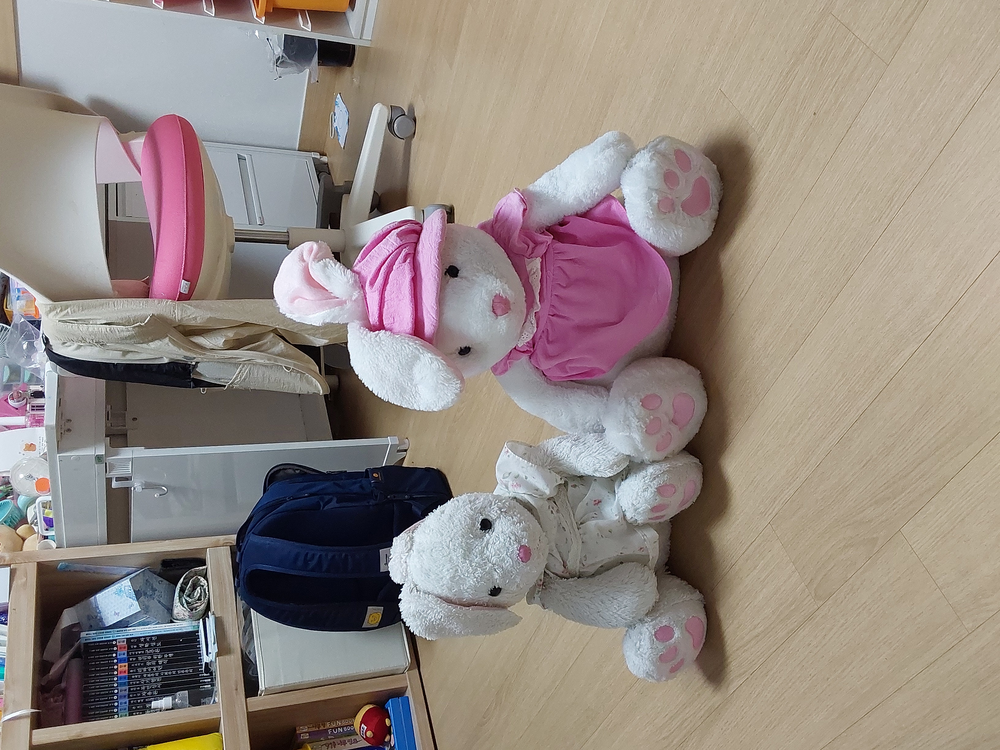
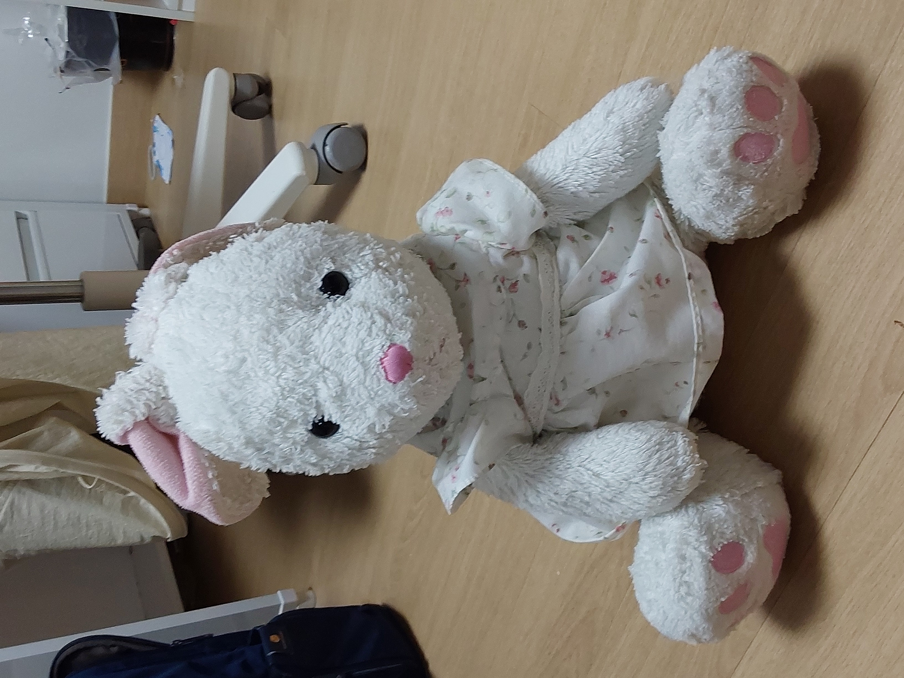
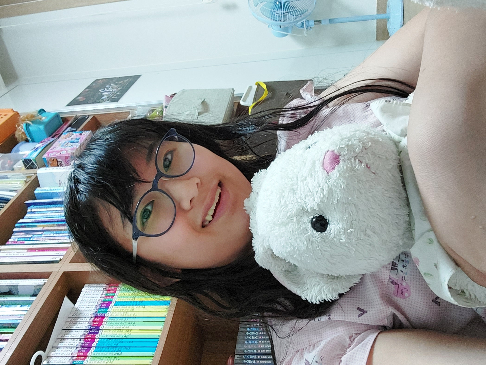
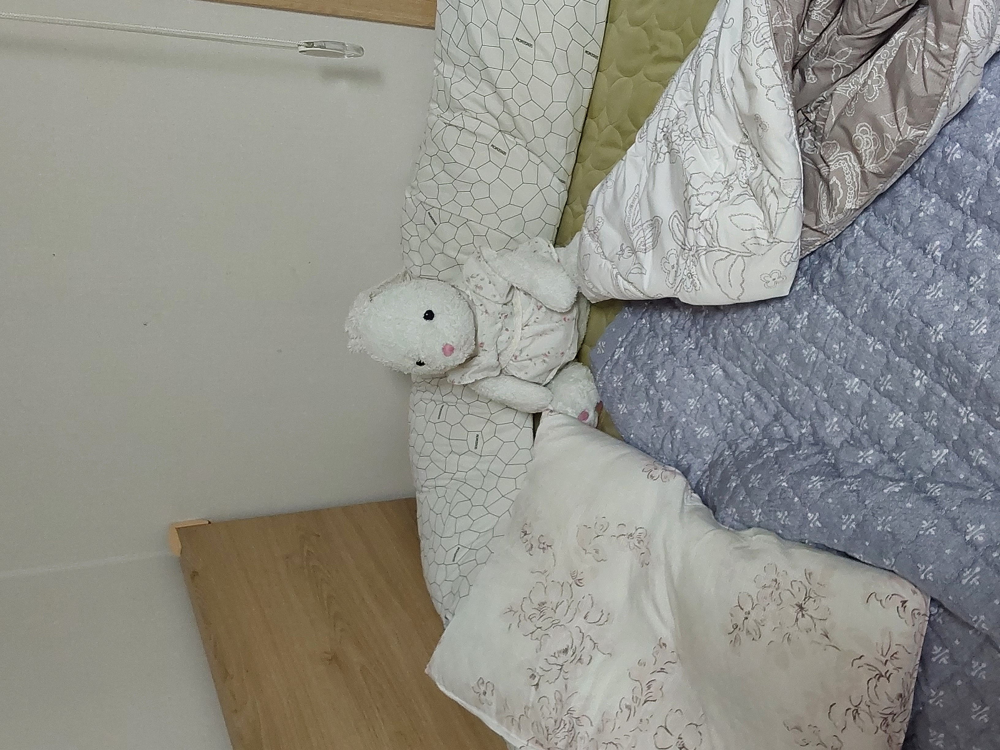
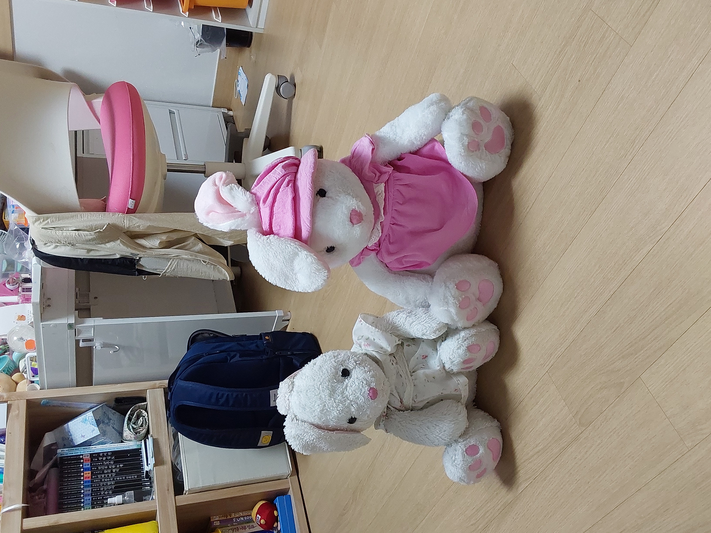

.jpg "안경을 써보자!")
귀여워서 미안해
내가 귀엽게 태어난걸 어떻해~♥
Niya
2012년 어느 여름날 어린 난 널 만났지 난 그때 알았어 넌 내 평생 친구가 되어 줄거라는걸
넌 정말 귀여워 넌 정말 사랑스러워 넌 정말 따뜻해
넌 클로버,당근 같은 채소를 좋아하고 사탕같은 단것은 싫어하지
올망졸망 귀여운 눈,코,입 새하얀털 그리고 길쭉한 귀까지 넌 정말 완벽해
새초롬해 보이지만 난 알아 넌 누구보다 따뜻하단걸.
누가 뭐래도 넌 나의 소중한친구 난 너를 사랑해, 그러니까 평생 같이있자 니야야~
<니야's프로필> 
이름:니야(niya)
생일:7/23 별자리:사자자리
나이:10세(2023/6월기준)
좋아하는것:각종 채소 과일,유진?!(희망사황입니다....)
싫어하는것:괴롭히는 사람,단것
특징:꽃무늬 원피스,흰털,귀여운 젤리

